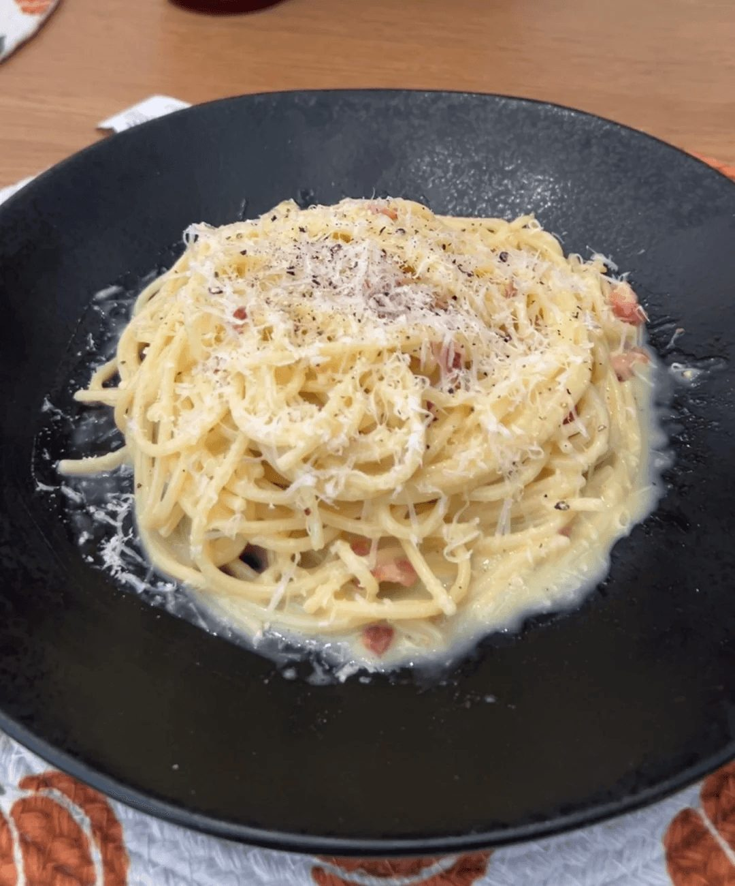
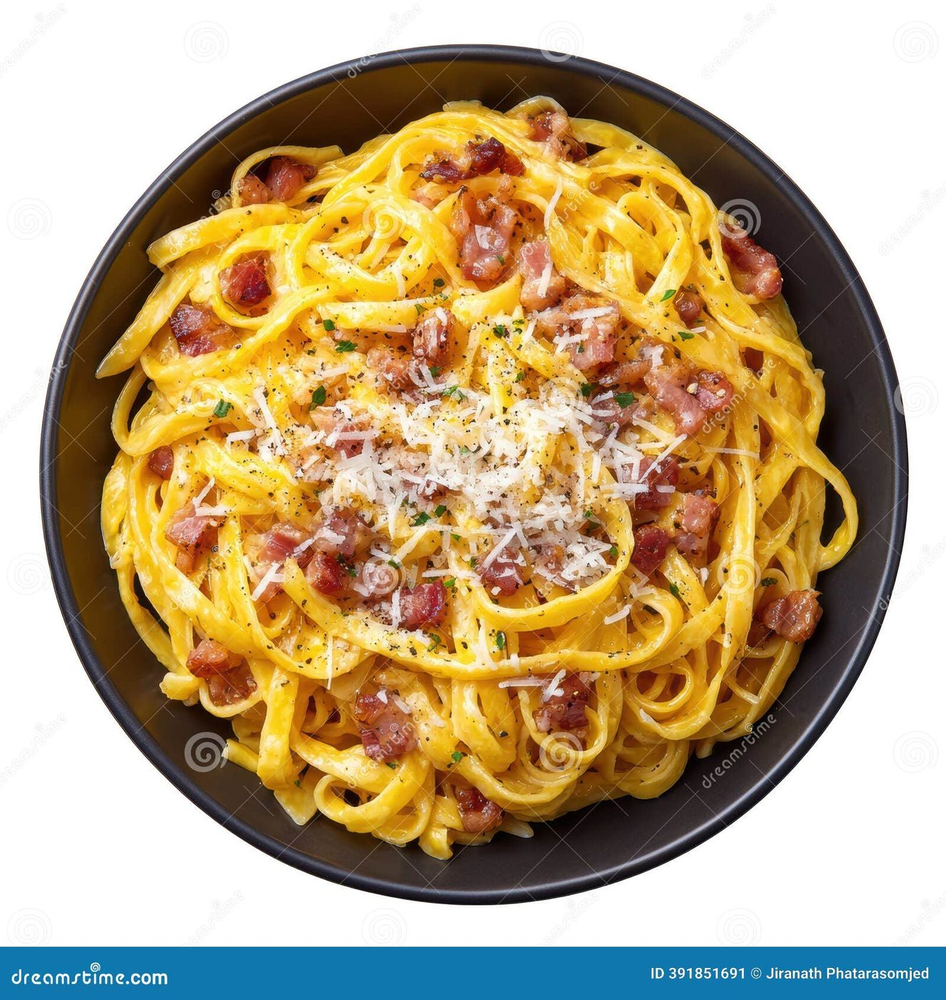
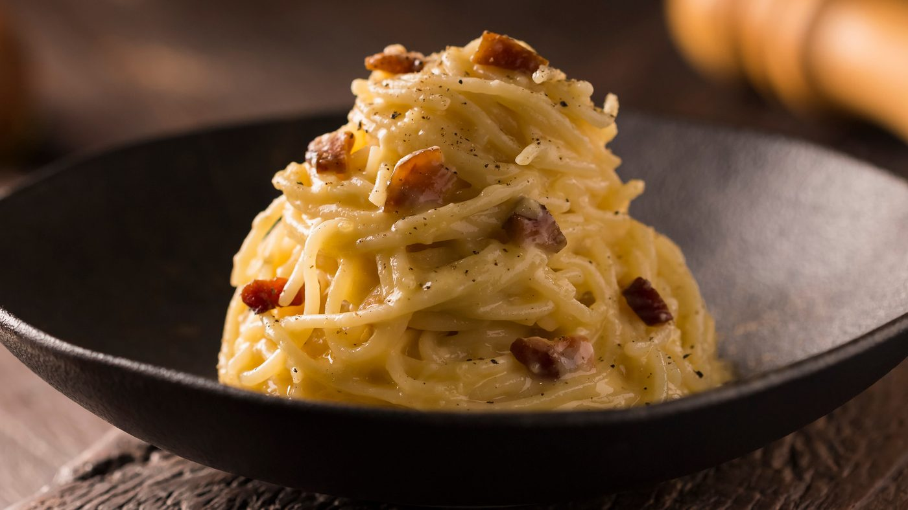
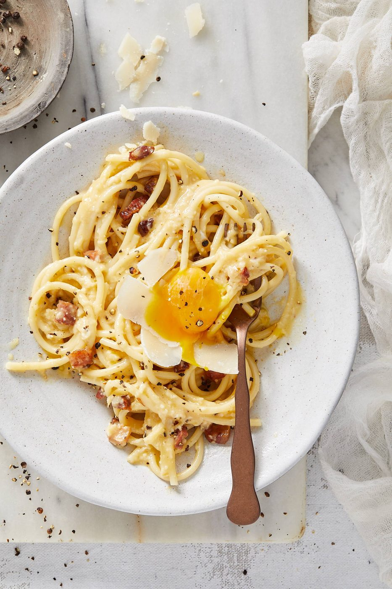
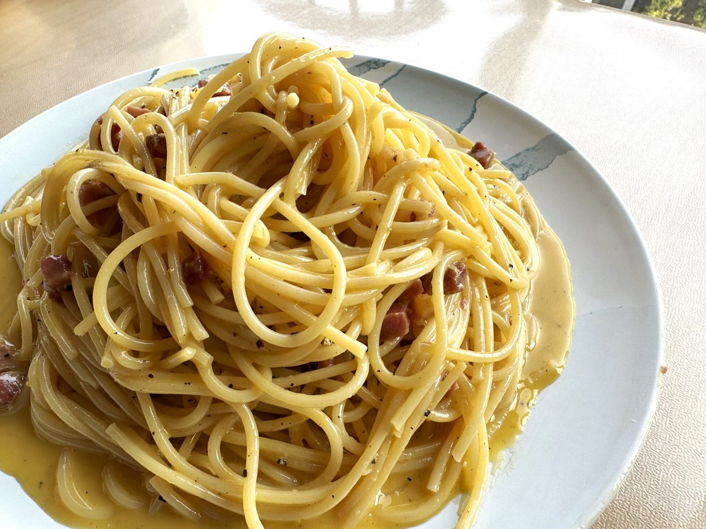
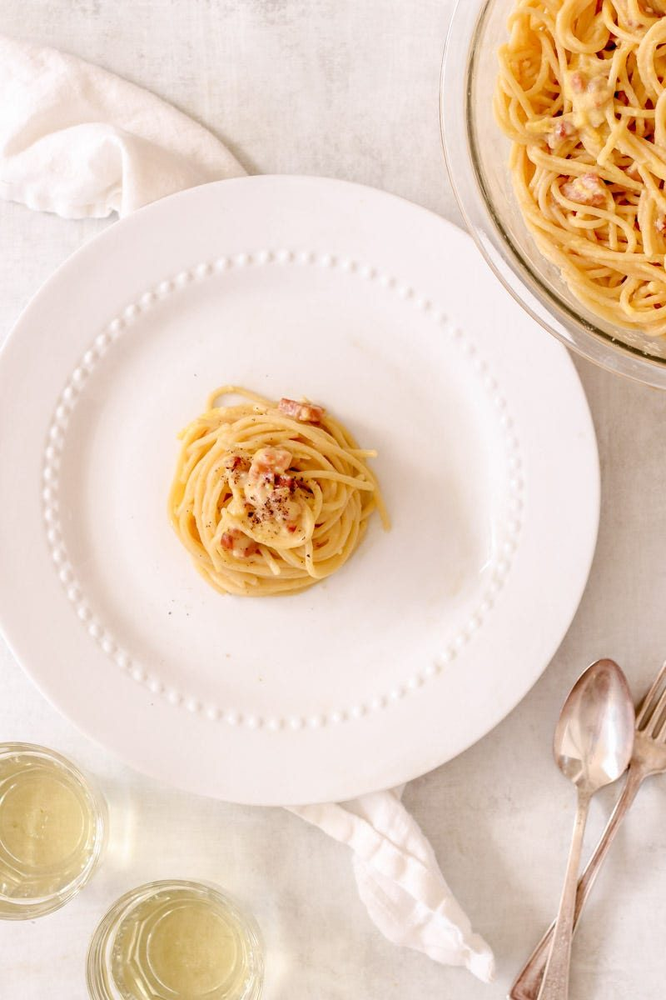
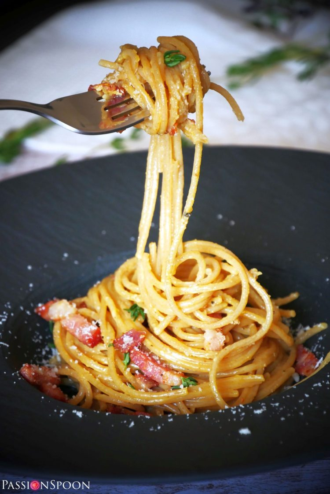

← Italian Classics
Authentic Carbonara
Guanciale, egg, pecorino, pepper. No cream. We need to talk about the no cream thing.
Guanciale, egg, pecorino, pepper. No cream. We need to talk about the no cream thing.
Carbonara is a dish with exactly four ingredients and a thousand opinions. Romans make it with guanciale — cured pork jowl, richer and silkier than bacon — pecorino romano, eggs, and a scandalous amount of black pepper. Cream is not in the recipe anywhere, and adding it is the fastest way to make an Italian grandmother sigh audibly in your general direction.
The technique lives in a narrow band of temperature. You want the eggs to turn into a custard that coats the pasta — glossy, flowing, tender. One degree too hot and you get scrambled eggs with spaghetti. The insurance policy is simple: work off the heat, use plenty of cheese in the egg mixture, and loosen with pasta water until the sauce pours like heavy cream.
serves 4 — tick items off as you shop; it saves as you go
Every tool this recipe leans on — click any tool for its full story. The whole catalog lives on the Tool Wall.
heavy - cast iron or stainless, for rendering the guanciale
pecorino, grated fine enough to melt instantly
coarse crack - pre-ground pepper is a different dish
Cut into thick matchsticks. Start in a cold pan over medium-low and let the fat render slowly for 8-10 minutes until deep gold and glassy. Kill the heat and leave the fat in the pan — this is your sauce base.
Yolks, whole egg, pecorino, half the pepper. It forms a thick paste — loosen with a spoonful of pasta water until it looks like wet sand turning to cream.
Salted water, rigatoni or spaghetti a minute under al dente. While it boils, warm the black pepper in a dry pan for 30 seconds until fragrant — small move, big aroma.
Pull pasta directly into the pan with a splash of its water. Toss. Then, OFF the heat, add the egg mixture and toss like your dinner depends on it — it does. Add pasta water in splashes until the sauce turns glossy and coats a spoon.
Warm bowls. Top with the crisp guanciale, remaining pepper, and a snowfall of pecorino. Carbonara waits for no one — the sauce is at its peak for about ninety seconds.







Images are web-sourced via image search and self-hosted. Original sources:
https://z-cdn.chatglm.cn/image-search-mcp/images-ppt/45c362f70607.jpghttps://z-cdn.chatglm.cn/image-search-mcp/images-ppt/7d6bc325346e.jpghttps://z-cdn.chatglm.cn/image-search-mcp/images-ppt/87c99773f827.jpghttps://z-cdn.chatglm.cn/image-search-mcp/images-ppt/a2105f1c0203.pnghttps://z-cdn.chatglm.cn/image-search-mcp/images-ppt/c88ed0fc6553.jpghttps://z-cdn.chatglm.cn/image-search-mcp/images-ppt/e7a1ea262873.jpghttps://z-cdn.chatglm.cn/image-search-mcp/images-ppt/f94f90c7b5df.jpgVerified working videos — click a card to load the embed.


The dish at a glance — twelve field notes for the collectors.
The origin theories, from charcoal workers to 1950s cookbooks
Temperature diagrams and rescue techniques for custard sauces
The Roman orthodoxy, from an Italian kitchen
Powered by GitHub Issues — the backup kitchen. One issue per recipe; your comment lands in the repo.
Roman pasta logic: no sauce, just emulsion. Fat, starch, water, nerve.

If this one works for you, the neighbors probably will too.
cheese-and-starch comfort, two nations, two temperatures